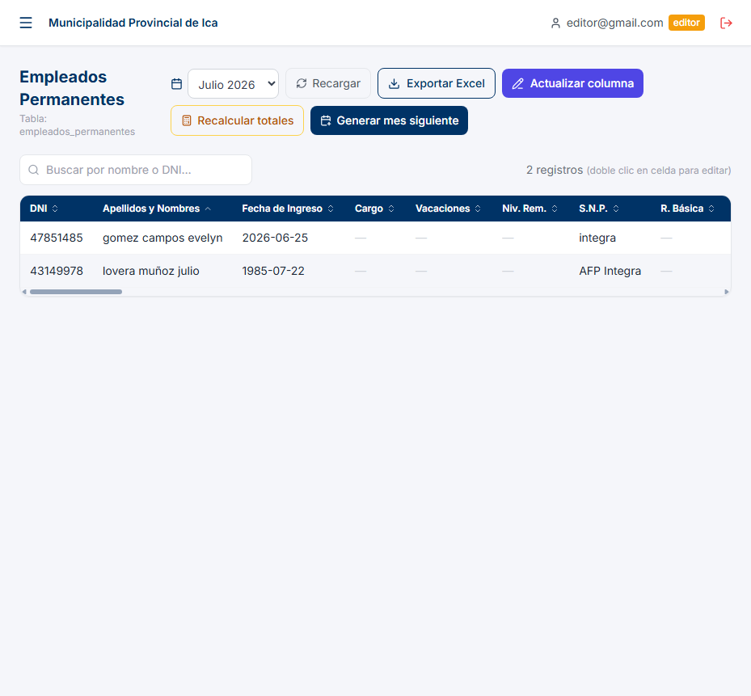
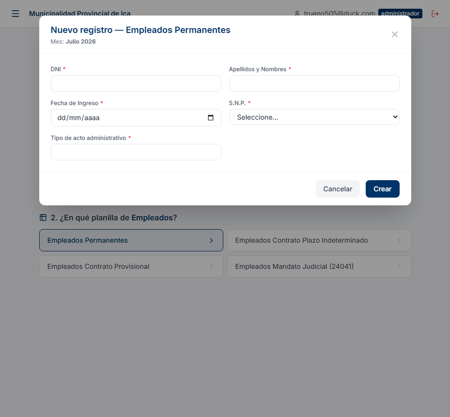

Editor — consulta + edición de datos
Todo lo del consultor, y además
- Nuevo registro (asistente de 3 pasos: grupo → planilla → datos básicos).
- Editar registros con cálculo automático de totales en vivo.
- Actualizar una columna masivamente subiendo un Excel (DNI + valor).
- Recalcular totales y generar el mes siguiente copiando la identidad.
Flujo típico: cargar descuentos
No gestiona usuarios ni ve la auditoría (eso es exclusivo del administrador).
Lo que ve en pantalla


1–2 · Iniciar sesión y conocer la pantalla
1 Iniciar sesión
- Abre el sistema en el navegador: verás la pantalla de acceso.
- Escribe tu correo y tu contraseña.
- Haz clic en Ingresar: entrarás al Panel de Planillas.
Tip: Si olvidaste la contraseña, el administrador puede asignarte una nueva.
2 Conocer la pantalla
- Arriba: tu usuario, tu rol y el botón de cerrar sesión.
- Menú lateral: Inicio, Búsqueda global y Mi perfil.
- Más abajo, las 19 planillas agrupadas en 5 categorías.
Tip: Tu rol define qué opciones aparecen en el menú.

10 · Nuevo registro (asistente de 3 pasos)
- En el menú entra a Nuevo registro.
- Paso 1: elige el grupo (Obreros, Empleados, CAS, Pensionistas, Autoridades).
- Paso 2: elige la planilla dentro de ese grupo.
- Paso 3: completa los datos básicos: DNI, Apellidos y Nombres, Fecha de Ingreso, S.N.P. (ONP/AFP) y Tipo de acto administrativo.
- Guarda. Los montos quedan en blanco para completarlos luego al editar.
Tip: El alta se hace solo desde aquí; si eliges AFP, aparece un segundo selector con las 4 AFP.

11 · Editar y eliminar registros
Editar un registro
- Abre la planilla y pulsa Editar en la fila (o doble clic en una celda).
- Cambia los valores: los totales se recalculan solos.
- Guarda con Actualizar.
Tip: Los 5 campos de identidad salen bloqueados como «(fijo)»; se corrigen con «Corregir datos fijos».
Eliminar un registro
- Pulsa Eliminar en la fila del trabajador.
- Confirma en el aviso. La acción no se puede deshacer.

Verificación y calidad
Se ejecutaron pruebas automatizadas y un recorrido en vivo del sistema real con los 3 roles.
Pruebas automatizadas
| Prueba | Resultado |
|---|---|
| Build de producción (compilación) | ✔ OK · 3.3 s · 2.3 MB |
| Pruebas en navegador (Playwright) | ✔ 7/7 · todas pasan |
| Pruebas unitarias (Vitest) | ✔ 5/5 · todas pasan |
| Análisis de código (ESLint) | ✔ Sin errores ni advertencias |
Nota: las cuatro comprobaciones pasan en verde. Se actualizaron los specs de prueba a la nueva función de histórico mensual (parámetro de periodo), se afinó el análisis de código (ESLint limpio) y el build compila. Además, el recorrido en vivo sobre el sistema real confirma que las funciones operan correctamente.
Recorrido en vivo (los 3 roles)
Se inició sesión con una cuenta de cada rol contra el sistema real y se verificó que cada uno ve exactamente lo que le corresponde.
Gating por rol verificado: el menú y los botones cambian según el rol conectado.